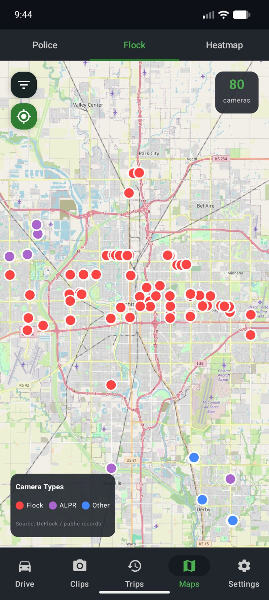

I Found a Dash Cam for Nerds — And It Might Be the Best Dashcam App for Android in 2026
I've hit two deer with my car. The first time, I had no dashcam. The second time, I had a cheap suction-cup dashcam from Amazon that fell off the windshield the week before it happened. So when I started looking for something better, I was mostly just trying to avoid paying another deductible.
What I found instead was a dashcam app for Android that I genuinely cannot stop showing people. Not because it records video — every dashcam app does that — but because of everything else it does. There are live AI bounding boxes. A map of every Flock Safety camera in the country. Police scanner integration. Timelapse recording. Dual camera. It's the kind of app that makes you want to drive places just to mess with the settings.
The app is called Phone Dashcam, and I've been running it as my daily driver dashcam for a few months. Here's an honest review.

Phone Dashcam running on an Android phone. The app turns any Android into a full dashcam.
What it actually is
Phone Dashcam turns your Android phone into a dashcam. You mount your phone on the windshield, open the app, and it records video in a loop — overwriting old footage automatically so you're not managing storage manually. If something happens, you save a clip. That's the core product, and it works well as a basic Android dashcam app.
The free version does looping dashcam recording with basic alert features. The Pro version ($6.99/month or $29.99/year) unlocks the features that make it worth writing about: the YOLO AI detection, parking mode, the full camera alert network, dual camera, and timelapse. That's where the nerd features live.
I use the Pro version of this app. The links in this article go to the Google Play listing. I'm not affiliated with the developer — I just think it's a genuinely good dashcam app for Android.
The nerdy stuff that makes this the best dashcam app for Android
Live YOLO Bounding Boxes While You Drive
This is the feature I show everyone. When you enable AI object detection, the app runs a YOLO neural network on your phone — not in the cloud, not on a server, actually on your phone's own processor — and draws labeled bounding boxes around every object it sees in the live camera feed. Cars get boxes. People get boxes. Deer get boxes. Dogs get boxes. Stop signs get boxes. Everything gets boxes.
It runs at about 7 frames per second, fast enough that the boxes feel responsive in real traffic. A truck passes and the model draws "truck 94%" on it. A cyclist goes by: "person 87%", "bicycle 91%". You start rooting for the model when confidence dips on something partially obscured. Watching it work in real traffic feels like driving around with a little AI co-pilot who is obsessed with drawing rectangles on everything — and I mean that as a compliment.
This runs entirely on-device, which means no internet dependency and no video ever leaves your phone. It's also been a real early warning for deer and pedestrians in low-light conditions where I noticed the box before I registered the object myself.

A Map of 336,000 ALPR Cameras Across the US
Flock Safety makes license plate reader cameras — the ALPR devices you see on utility poles near neighborhood entrances and on police cruisers. There are a lot of them. Over 336,000 documented locations in the US, according to the app's database.
Phone Dashcam has a map of all of them. You can pull it up and see every Flock camera near you, color-coded by type: fixed pole cameras, mobile units, school cameras. It's the kind of map that makes you realize how extensively these systems are deployed in places you drive every day without noticing.

Red Light Cameras, Speed Traps, and Police Alerts
Beyond Flock, the app overlays red light cameras, speed cameras, and police-reported speed traps on the map as you drive. When you're approaching a known camera location, you get an audio alert. It's the same idea as a radar detector app, but layered into your dashcam feed instead of a separate device on your dash.
The map updates as you move. Most useful on unfamiliar roads where you can see the cluster of speed cameras before you're already on top of them.

Smart Motion Detection While Parked
When your car is parked and plugged into a charger or USB power bank, parking mode keeps the app running — watching for motion and recording clips if it detects anything. It uses the phone's accelerometer and camera together: a bump, a person walking up, or a vehicle coming too close can all trigger a recording.
The motion detection uses the YOLO model here too, which means it can distinguish between a person approaching the car versus a shadow passing over the windshield. That's a real advantage over cheap dedicated dashcams that trigger on every passing truck's wind displacement.

Timelapse Recording and Two-Phone Dual Camera
Timelapse mode records at a compressed rate — 4x, 8x, or 16x — which is useful for long parking lot watch sessions or just makes road trips look great. The output is a properly encoded video file, not a slideshow of JPEGs.
Dual camera mode uses two Android phones simultaneously — front and rear — recording both views in the same drive session. Most dedicated dashcams charge significantly more for a second lens. Here it's literally a spare phone from your drawer, which many people already have.

The honest verdict: good and bad
- YOLO AI detection is fast and accurate in good light
- Flock camera map is genuinely useful, not just a toy
- Video quality is whatever your phone camera is — usually excellent
- No dedicated hardware to buy or replace
- Parking mode with YOLO-based smart motion detection
- Fully on-device — no cloud dependency for any feature
- Works with Android Auto
- Free tier is functional as a basic dashcam app
- Ties up your phone — can't use it normally while recording
- Phone heat is real on long drives with AI detection on
- AI detection is slightly slower on older hardware
- Needs a good mount and cable management to install cleanly
- Battery drain is significant without a constant charger
Phone Dashcam vs. a dedicated dashcam
The honest comparison: a dedicated dashcam like a Viofo A229 or BlackVue is plug-and-forget hardware. You install it once, it records forever, you never think about it. If you want the simplest possible dashcam solution, buy dedicated hardware and move on.
Phone Dashcam wins on features and video quality. A mid-range Android phone camera beats what most sub-$100 dedicated dashcams can produce. And no dedicated hardware at any price ships with YOLO AI detection, a Flock Safety camera map, and police alert overlays. That combination doesn't exist anywhere else.
I also already had a spare Android phone. The dual-camera setup cost me zero additional hardware — just a second mount and cable.
Watching the YOLO boxes go in real traffic feels like driving around with a little AI co-pilot who's obsessed with drawing rectangles on everything. It's the best $30/year I've spent on my car.
Who it's for
If you find yourself reading a paragraph about how a YOLO neural network processes camera frames at 7fps with bounding boxes and thinking "that sounds like a good Friday night," this is the dashcam app for you. It's the best dashcam app for Android in 2026 if you care about features over simplicity.
The second deer I hit was before I had this app. I'd like to think the bounding box would have fired with enough warning to brake. I can't prove that either way. But I haven't hit a third one.
Try it free on Android
Phone Dashcam is free to download. Basic dashcam recording, speed alerts, and some camera alerts are included at no charge. Pro features — YOLO AI detection, Flock camera map, parking mode, dual camera — are $6.99/month or $29.99/year.
Download Phone Dashcam FreeMore reading
- How the YOLO AI detection works — the technical details on the on-device model
- What are Flock Safety cameras? — the ALPR network explained and how it's mapped
- Parking mode deep dive — how overnight monitoring and motion detection works
- Turn an old phone into a dashcam — set up a dedicated Android phone as a permanent dashcam
- Dual camera dashcam setup — front and rear recording with two Android phones
- Phone dashcam vs. dedicated dashcam — full comparison of both approaches